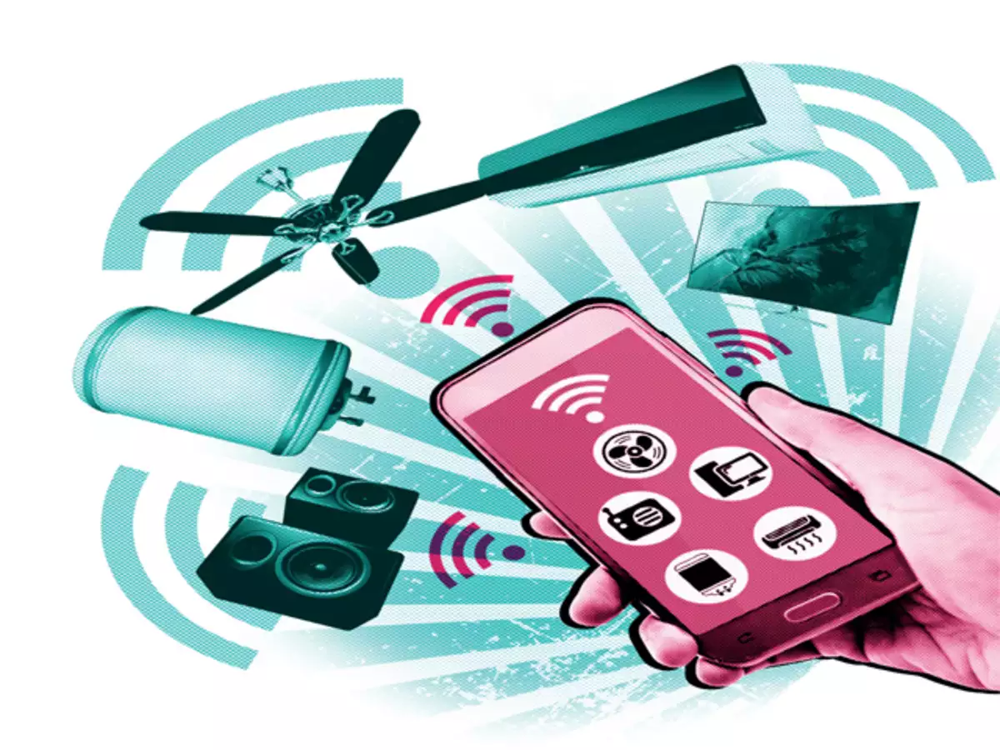
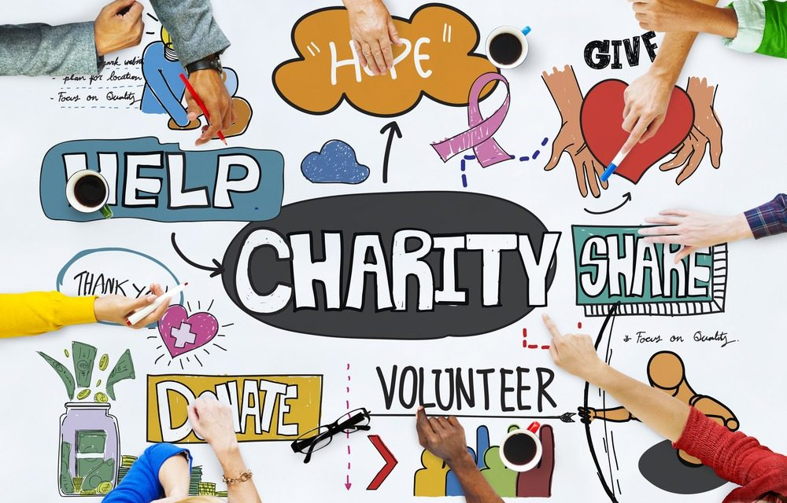

SAI SIRISHA N
M. Tech. Student
Computer Science and Engineering
Internation Institute of Information Technology, Hyderabad
Contact: +91-XXXXXXXXXX
Email ID: sai.sirisha@students.iiit.ac.in
Linkedin profile
About me:
I am currently doing my Masters in Technology in Computer Science and Engineering from IIIT Hyderabad. I completed my B.E. degree from Mumbai Univesity in Computer Engineering in 2019. I was the first ranker across all branches in my college. My BE Project,
"Charity-Chain " was based on building a charity system based on Blockchain. I also did a side-project of building a Smart Electricity Consumption system using IoT. I published three papers based on my projects, whose links can be
found
here. Both of my projects were accepted for minor grant from Mumbai University.
I got a wonderful opportunity of working in BARC, Mumbai in Department of Remote Handling and Robotics, after which I got an inclination towards research. The project was based on detecting the fiducials for neuro surgery.
Working there was an amazing experience.
After my BE, I worked in a software company for a period of 5 months, where I learnt various skills. My job was to build products using C# .NET framework, which I thoroughly enjoyed. I will always be thankful to my senior collegues
and peers for supporting me to pursue my dreams.
In my free time, I like reading books, cooking and gardening.
Publications:
List at Google scholar

Proposed solutions based on Blockchain
IEEE Xplore link

Charity Chain - Donations using Blockchain
Springer link
My BE Project involved Blockchain Technology to eradicate corruption and increase the trust in charity systems and transparency in public organizations so that the funds and donations reach the end user safely. I realised that this technology has the
capability to eradicate many issues that our country is currently facing and it can impact the economy in a positive way. I have also worked on a project that aims to bring transparency in the electricity system for the end customer
so that he/she will know the real-time utilisation of the power with respect to each device. This will help him/her to judiciously utilise the electricity resources and save the electricity expenditure.
I enjoyed searching for solutions for the problem statements and during the process of writing the papers, I understood that it is not only important to know about the emerging technologies, but it is equally important to utilise
the knowledge in bringing a social impact. In my BE course, I have studied various domains like Image Processing, IoT Systems and Big Data Analysis in and would really like to use these topics to develop solutions to solve real-life
problems.
Achievements:
- Received Minor Grant Proposal worth Rs. 40,000 from Mumbai University for two projects
- Selected in Top 10 in a 24-hour National Hackathon, BitCamp’18 organized by CSI, RAIT
- Winner of the Technical Paper Presentation organized by ISTE for the paper on DNA Cryptography
- Secured 1st rank in BE across all branches of the college (2015-19)
- Won Best Speaker Award and 3rd prize in “Awakening the Scientist” Competition in First Year
Other activities:
- Certified in Microsoft Technology Associate for Security Fundamentals
- Participated in EthIndia, a 24-hr Global Hackathon based on Ethereum Blockchain
- Attended the National Summer Training Program on Internet of Things organized by IIT, Rourkee
- Leader of the Abhar Utsav Initiative of the NGO, Karmyo
- Finalist of the debate organized by Times of India in VESIT
- Managing Committee member in VESIT Illusion ‘18
- Worked as the Cultural Incharge in the class council for two years (2015-2017)